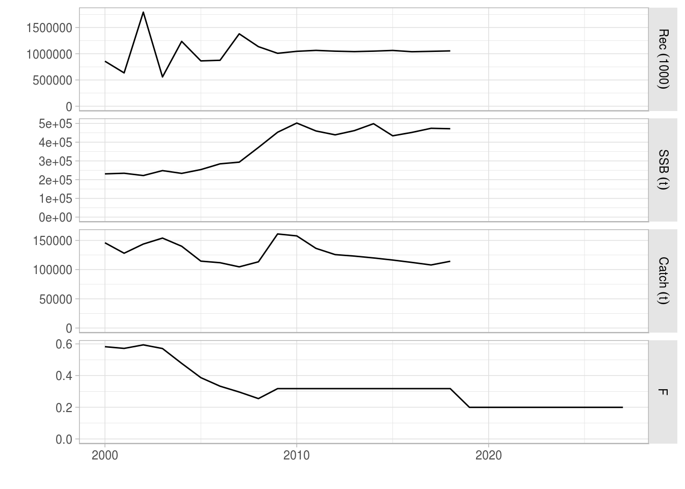
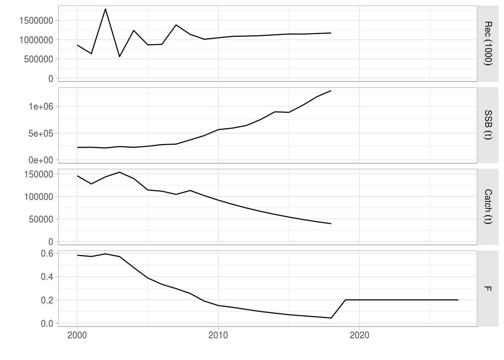
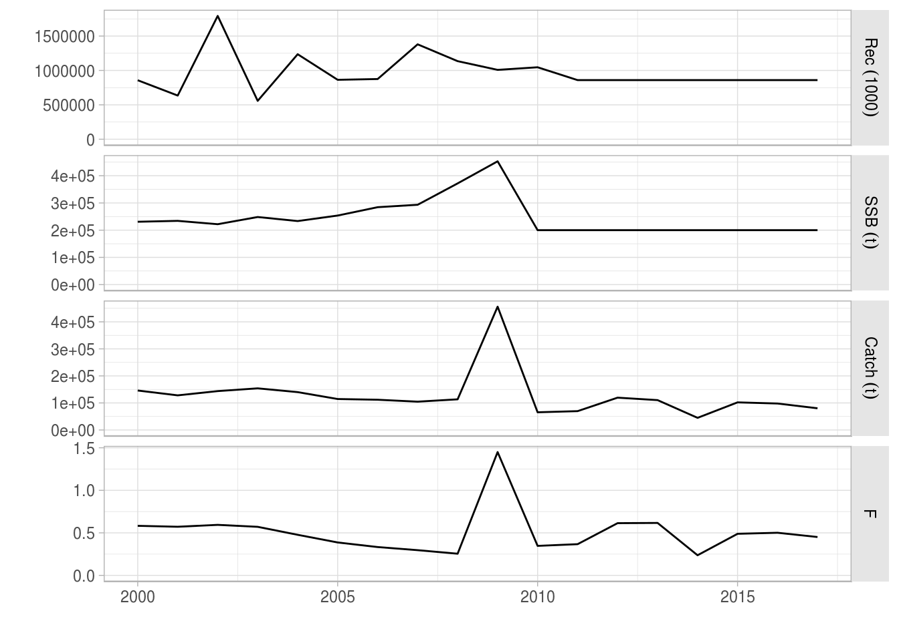
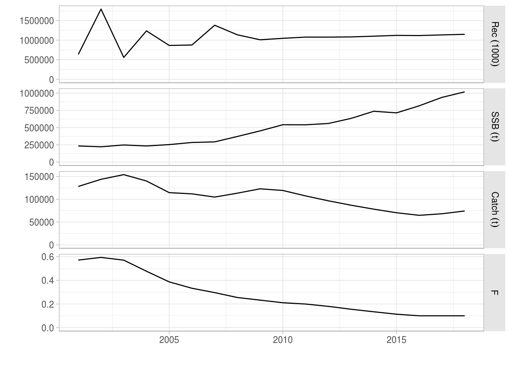
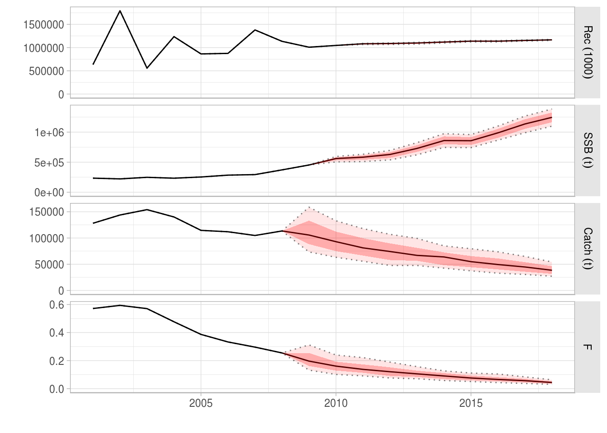
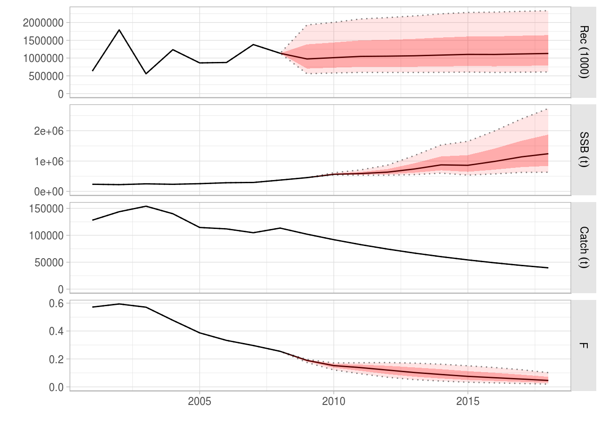
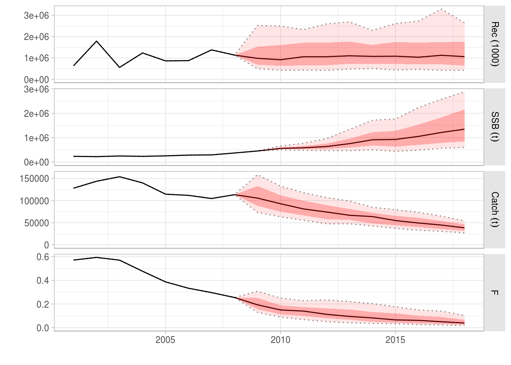

This tutorial describes how Medium-Term Forecasts (MTF) can be performed using FLR. It uses the FLasher package for running projections, an updated version of theFLash package.
MTFs use the same engine as Short-Term Forecasts (STFs). However, there are some key differences between them.
Special attention must be paid to the conditioning and future assumptions of the stock.
This tutorial focuses on running projections with an FLStock. To see how FLasher can be used to simulate mixed fisheries with FLBiols and FLFisheries see this tutorial.
To follow this tutorial you should have installed the following packages:
You can do so as follows,
install.packages(c("FLCore"), repos="http://flr-project.org/R")
install.packages(c("FLasher"), repos="http://flr-project.org/R")
install.packages(c("FLFishery"), repos="http://flr-project.org/R")# Load all necessary packages, trim pkg messages
library(FLCore)
library(FLasher)Running an MTF is similar to running an STF in that we need several components:
However, there are some significant differences between an MTF and an STF:
In this tutorial we will build a 10 year projection, introduce a range of target types (including minimum and maximum target values, as well as relative target values), use a dynamic SRR and introduce uncertainty.
As ususal, we base the projections on plaice in the North Sea.
data(ple4)The first step is to condition the projection by making assumptions about the stock in the future, and to fit the SRR.
We use the stf() function to set up our stock into the future. stf() makes a lot of assumptions to set up a future stock. We may want to change some of these assumptions, but for the moment we will use the defaults.
ple4_mtf <- stf(ple4, nyears = 10)
# Now the stock goes up to 2018
summary(ple4_mtf)An object of class "FLStock"
Name: PLE
Description: Plaice in IV. ICES WGNSSK 2018. FLAAP
Quant: age
Dims: age year unit season area iter
10 71 1 1 1 1
Range: min max pgroup minyear maxyear minfbar maxfbar
1 10 10 1957 2027 2 6
catch : [ 1 71 1 1 1 1 ], units = t
catch.n : [ 10 71 1 1 1 1 ], units = 1000
catch.wt : [ 10 71 1 1 1 1 ], units = kg
discards : [ 1 71 1 1 1 1 ], units = t
discards.n : [ 10 71 1 1 1 1 ], units = 1000
discards.wt : [ 10 71 1 1 1 1 ], units = kg
landings : [ 1 71 1 1 1 1 ], units = t
landings.n : [ 10 71 1 1 1 1 ], units = 1000
landings.wt : [ 10 71 1 1 1 1 ], units = kg
stock : [ 1 71 1 1 1 1 ], units = t
stock.n : [ 10 71 1 1 1 1 ], units = 1000
stock.wt : [ 10 71 1 1 1 1 ], units = kg
m : [ 10 71 1 1 1 1 ], units = m
mat : [ 10 71 1 1 1 1 ], units =
harvest : [ 10 71 1 1 1 1 ], units = f
harvest.spwn : [ 10 71 1 1 1 1 ], units =
m.spwn : [ 10 71 1 1 1 1 ], units = In these examples we use a Beverton-Holt model (see the tutorial on fitting SRRs for more detail). The resulting SRR fit can be seen in Figure 1. Most of the projections will be performed by passing in a fitted FLSR object. For more information on how to set the SR for projections with FLasher this tutorial.
ple4_sr <- fmle(as.FLSR(ple4, model="bevholt"), control=list(trace=0))plot(ple4_sr)Fitted Beverton-Holt stock-recruitment relationship for the ple4 stock object
For a simple first example we will set the future F at F status quo and assume that F status quo is the mean of the last 4 years
f_status_quo <- mean(fbar(ple4)[,as.character(2005:2008)])
f_status_quo[1] 0.3177Make the control data.frame including all the years of the projection (note that FLash used quantity and val as column names and FLasher uses quant and value)
ctrl_target <- data.frame(year = 2009:2018,
quant = "f",
value = f_status_quo)Make the fwdControl object from the control data.frame
ctrl_f <- fwdControl(ctrl_target)
ctrl_fAn object of class "fwdControl"
(step) year quant min value max
1 2009 f NA 0.318 NA
2 2010 f NA 0.318 NA
3 2011 f NA 0.318 NA
4 2012 f NA 0.318 NA
5 2013 f NA 0.318 NA
6 2014 f NA 0.318 NA
7 2015 f NA 0.318 NA
8 2016 f NA 0.318 NA
9 2017 f NA 0.318 NA
10 2018 f NA 0.318 NAAn alternative method for making the fwdControl object is to pass in lists of target. This can often be simpler when making complicated control objects as we will see below.
ctrl_f <- fwdControl(list(year=2009:2018, quant="f", value=f_status_quo))
ctrl_fAn object of class "fwdControl"
(step) year quant min value max
1 2009 f NA 0.318 NA
2 2010 f NA 0.318 NA
3 2011 f NA 0.318 NA
4 2012 f NA 0.318 NA
5 2013 f NA 0.318 NA
6 2014 f NA 0.318 NA
7 2015 f NA 0.318 NA
8 2016 f NA 0.318 NA
9 2017 f NA 0.318 NA
10 2018 f NA 0.318 NAWe have columns of year, quant (target type), min, value and max (and others not shown here yet). Here we are only using year, quant and value. We can now run fwd() with our three ingredients. Note that the control argument used to be called ctrl in FLash. Also, with FLasher the control and sr arguments must be named.
ple4_f_sq <- fwd(ple4_mtf, control = ctrl_f, sr = ple4_sr)
# What just happened? We plot the stock from the year 2000.
plot(window(ple4_f_sq, start=2000))
The future Fs are as we set in the control object
fbar(ple4_f_sq)[,ac(2005:2018)], , unit = unique, season = all, area = unique
year
age 2005 2006 2007 2008 2009
all 0.38686 0.33299 0.29622 0.25465 0.31768
[ ... 4 years]
year
age 2014 2015 2016 2017 2018
all 0.31768 0.31768 0.31768 0.31768 0.31768What about recruitment? Remember we are now using a Beverton-Holt model.
rec(ple4_f_sq)[,ac(2005:2018)], , unit = unique, season = all, area = unique
year
age 2005 2006 2007 2008 2009
1 863893 875191 1379750 1135050 1008401
[ ... 4 years]
year
age 2014 2015 2016 2017 2018
1 1049618 1062957 1038442 1045891 1054303The recruitment is not constant but it is not changing very much. That’s because the fitted model looks flat (Figure 1).
In this example we introduce two new things:
Setting a catch target allows exploring the consequences of different TAC strategies. In this example, the TAC (the total catch of the stock) is reduced 10% each year for 10 years.
We create a vector of future catches based on the catch in 2008:
future_catch <- c(catch(ple4)[,"2008"]) * 0.9^(1:10)
future_catch [1] 102057 91851 82666 74400 66960 60264 54237 48814 43932 39539We create the fwdControl object, setting the target quantity to catch and passing in the vector of future catches
ctrl_catch <- fwdControl(list(year=2009:2018, quant = "catch", value=future_catch))
# The control object has the desired catch target values
ctrl_catchAn object of class "fwdControl"
(step) year quant min value max
1 2009 catch NA 102056.935 NA
2 2010 catch NA 91851.241 NA
3 2011 catch NA 82666.117 NA
4 2012 catch NA 74399.506 NA
5 2013 catch NA 66959.555 NA
6 2014 catch NA 60263.600 NA
7 2015 catch NA 54237.240 NA
8 2016 catch NA 48813.516 NA
9 2017 catch NA 43932.164 NA
10 2018 catch NA 39538.948 NAWe call fwd() with the stock, the control object and the SRR, and look at the results
ple4_catch <- fwd(ple4_mtf, control = ctrl_catch, sr = ple4_sr)
catch(ple4_catch)[,ac(2008:2018)], , unit = unique, season = all, area = unique
year
age 2008 2009 2010 2011 2012
all 113397 102057 91851 82666 74400
[ ... 1 years]
year
age 2014 2015 2016 2017 2018
all 60264 54237 48814 43932 39539plot(window(ple4_catch, start=2000))
The decreasing catch targets have been hit. Note that F has to be similarly reduced to hit the catch targets, resulting in a surge in SSB.
In the previous examples we have set target types based on the activity of the fleet (F and catch). We can also set biological target types. This is useful when there are biological reference points, e.g. Bpa.
Setting a biological target must be done with care because it may not be possible to hit the target. For example, even when F is set to 0, the stock may not be productive enough to increase its abundance sufficiently to hit the target.
There are currently three types of biological target available in FLasher: SRP, SSB and biomass. Of these, there are several flavours of SSB and biomass that differ in terms of timing.
The SRP target is the Stock Recruitment Potential at the time of spawning, i.e. if a stock spawns in the middle of the year, after the abundance has been reduced by fishing and natural mortality, this is the SRP at that point in time. At the moment, SRP is calculated as the mass of mature fish, i.e. SSB. If setting an SRP target, you must be aware of the timing of spawning and the timing of the fishing period.
Internally, FLasher attempts to hit the desired target in a time step by finding the appropriate value of F in that timestep. If the stock spawns before fishing starts, then changing the fishing activity in that timestep has no effect on the SRP at the time of spawning. It is not possible to hit the target by manipulating F in that timestep and FLasher gives up.
SSB is the Spawning Stock Biomass calculated as the total biomass of mature fish. The biomass is simply the total biomass of the stock. For the SSB and biomass targets, there are three different flavours based on timing:
ssb() method for FLStock objects);This last option needs some explanation. If fishing starts before spawning (i.e. the harvest.spwn slot of an FLStock is greater than 0) then the SSB or biomass at the time of spawning in that timestep is returned. If fishing starts after spawning, or there is no spawning in that time step (which may happen with a seasonal model), then the SSB or biomass at the time of spawning in the next timestep is returned.
However, this second case can be more complicated for several reasons. If there is no spawning in the next time step then we have a problem and FLasher gives up (F in the current timestep does not affect the SSB or biomass at the time of spawning in the current or next timestep). Additionally, if there is no next time step (i.e. we have reached the end of the projection) then FLasher gives up.
There is also a potential problem that if the fishing in the next timestep starts before spawning, the SSB or biomass at the time of spawning in the next timestep will be affected by the effort in the current timestep AND the next timestep. FLasher cannot handle this and weird results will occur (although it is an unusal situation).
For these reasons, it is better to only use the FLash-like target for annual models and when fishing and spawning happen at the same time in each year through the projection.
Here we give simple demonstrations of the different types of biological targets using SSB. The results of using a biomass target will have the same behaviour. Only a 1 year projection is run.
The timing of spawning and fishing are controlled by the m.spwn and harvest.spwn slots. Our test FLStock object has m.spwn and harvest.spwn values of 0. This means that spawning and fishing happens at the start of the year and that spawning is assumed to happen before fishing.
Here we set a target SSB for the end of the timestep
final_ssb <- 100000
ctrl_ssb <- fwdControl(list(year=2009, quant = "ssb_end", value=final_ssb))
ple4_ssb <- fwd(ple4_mtf, control=ctrl_ssb, sr = ple4_sr)
# Calculate the final SSB to check the target has been hit
survivors <- stock.n(ple4_ssb) * exp(-harvest(ple4_ssb) - m(ple4_ssb))
quantSums((survivors * stock.wt(ple4_ssb) * mat(ple4_ssb))[,ac(2009)])An object of class "FLQuant"
, , unit = unique, season = all, area = unique
year
age 2009
all 1e+05
units: t If fishing occurs after spawning, the level of fishing will not affect the SSB or biomass at the time of spawning. This is currently the case because m.spwn and harvest.spwn have values of 0. The result is that the projection will fail with a warning (intentionally). We see this here.
spawn_ssb <- 100000
ctrl_ssb <- fwdControl(list(year=2009, quant = "ssb_spawn", value=spawn_ssb))
ple4_ssb <- fwd(ple4_mtf, control=ctrl_ssb, sr = ple4_sr)Warning in operatingModelRun(rfishery, biolscpp, control, effort_max =
effort_max, : In operatingModel eval_om, ssb_spawn target. Either spawning
happens before fishing (so fishing effort has no impact on SRP), or no
spawning in timestep. Cannot solve.# Using the `ssb()` method to get the SSB at the time of spawning, we can see that the projection failed
ssb(ple4_ssb)[,ac(2009)]An object of class "FLQuant"
, , unit = unique, season = all, area = unique
year
age 2009
all 453027
units: t In the previous example, spawning happens at the start of the year. We can change this with the m.spwn slot. Natural mortality is assumed to happen continuously through the year. Therefore, if we set the m.spwn slot to 0.5, then half the natural mortality happens before spawning, i.e. spawning happens half way through the year. Similarly, the current value of harvest.spwn is 0, meaning that spawning happens before any fishing happens. If we set this value to 0.5 then half of the fishing mortality has occurred before spawning. With these changes, the example now runs.
m.spwn(ple4_mtf)[,ac(2009)] <- 0.5
harvest.spwn(ple4_mtf)[,ac(2009)] <- 0.5
spawn_ssb <- 100000
ctrl_ssb <- fwdControl(data.frame(year=2009, quant = "ssb_spawn", value=spawn_ssb))
ple4_ssb <- fwd(ple4_mtf, control=ctrl_ssb, sr = ple4_sr)
# We hit the target
ssb(ple4_ssb)[,ac(2009)]An object of class "FLQuant"
, , unit = unique, season = all, area = unique
year
age 2009
all 139185
units: t At the moment FLasher calculates the SRP as SSB. This means that the SRP target type behaves in the same way as the ssb_spawn target.
srp <- 100000
ctrl_ssb <- fwdControl(data.frame(year=2009, quant = "srp", value=srp))
ple4_ssb <- fwd(ple4_mtf, control=ctrl_ssb, sr = ple4_sr)
# We hit the target
ssb(ple4_ssb)[,ac(2009)]An object of class "FLQuant"
, , unit = unique, season = all, area = unique
year
age 2009
all 139185
units: t As mentioned above, the FLash-like targets can have different behaviour depending on the timing of spawning and fishing. If fishing starts before spawning, the SSB or biomass at the time of spawning in the current timestep will be hit (if possible). This is demonstrated here.
# Force spawning to happen half way through the year
# and fishing to start at the beginning of the year
m.spwn(ple4_mtf)[,ac(2009)] <- 0.5
harvest.spwn(ple4_mtf)[,ac(2009)] <- 0.5
flash_ssb <- 150000
ctrl_ssb <- fwdControl(data.frame(year=2009, quant = "ssb_flash", value=flash_ssb))
ple4_ssb <- fwd(ple4_mtf, control=ctrl_ssb, sr = ple4_sr)
# Hit the target? Yes
ssb(ple4_ssb)[,ac(2009)]An object of class "FLQuant"
, , unit = unique, season = all, area = unique
year
age 2009
all 150000
units: t However, if fishing starts after spawning, the SSB or biomass at the time of spawning in the next timestep will be hit (if possible). This is because fishing in the current timestep will have no impact on the SSB at the time of spawning in the current timestep.
# Force spawning to happen at the start of the year before fishing
m.spwn(ple4_mtf)[,ac(2009)] <- 0.0
harvest.spwn(ple4_mtf)[,ac(2009)] <- 0.0
flash_ssb <- 150000
ctrl_ssb <- fwdControl(data.frame(year=2009, quant = "ssb_flash", value=flash_ssb))
ple4_ssb <- fwd(ple4_mtf, control=ctrl_ssb, sr = ple4_sr)
# We did hit the SSB target, but not until 2010.
ssb(ple4_ssb)[,ac(2009:2010)]An object of class "FLQuant"
, , unit = unique, season = all, area = unique
year
age 2009 2010
all 453027 150000
units: t Here we run a longer projection with a constant FLash-like SSB target. Spawning happens before fishing so the target will not be hit until the following year.
# Force spawning to happen at the start of the year before fishing
m.spwn(ple4_mtf)[,ac(2009)] <- 0.0
harvest.spwn(ple4_mtf)[,ac(2009)] <- 0.0
future_ssb <- 200000
ctrl_ssb <- fwdControl(data.frame(year=2009:2018, quant = "ssb_flash", value=future_ssb))
ple4_ssb <- fwd(ple4_mtf, control = ctrl_ssb, sr = ple4_sr)We get a warning about running out of room. This is because future stock object, ple4_mtf, goes up to 2018. When we set the SSB target for 2018, it tries to hit the final year target in 2019. The targets that were set for 2009 to 2017 have been hit in 2010 to 2018. However, we cannot hit the target that was set for 2018. This means that the returned value of F in 2018 needs to be discounted.
ssb(ple4_ssb)[,ac(2009:2018)]An object of class "FLQuant"
, , unit = unique, season = all, area = unique
year
age 2009 2010 2011 2012 2013 2014 2015 2016 2017
all 453027 200000 200000 200000 200000 200000 200000 200000 200000
year
age 2018
all 200000
units: t fbar(ple4_ssb)[,ac(2009:2018)]An object of class "FLQuant"
, , unit = unique, season = all, area = unique
year
age 2009 2010 2011 2012 2013 2014 2015 2016
all 1.44978 0.34689 0.36678 0.61388 0.61653 0.23650 0.48870 0.50101
year
age 2017 2018
all 0.45091 0.49033
units: f plot(window(ple4_ssb, start=2000, end=2017))
The examples above have dealt with absolute target values. We now introduce the idea of relative values. This allows us to set the target value relative to the value in another time step.
We do this by using the relYear column in the control object (the year that the target is relative to). The value column now holds the relative value, not the absolute value.
Here we set catches in the projection years to be 90% of the catches in the previous year, i.e. we want the catche in 2009 to be 0.9 * value in 2008 etc.
ctrl_rel_catch <- fwdControl(
data.frame(year = 2009:2018,
quant = "catch",
value = 0.9,
relYear = 2008:2017))
# The relative year appears in the control object summary
ctrl_rel_catchAn object of class "fwdControl"
(step) year quant relYear min value max
1 2009 catch 2008 NA 0.900 NA
2 2010 catch 2009 NA 0.900 NA
3 2011 catch 2010 NA 0.900 NA
4 2012 catch 2011 NA 0.900 NA
5 2013 catch 2012 NA 0.900 NA
6 2014 catch 2013 NA 0.900 NA
7 2015 catch 2014 NA 0.900 NA
8 2016 catch 2015 NA 0.900 NA
9 2017 catch 2016 NA 0.900 NA
10 2018 catch 2017 NA 0.900 NAWe run the projection as normal
ple4_rel_catch <- fwd(ple4_mtf, control = ctrl_rel_catch, sr = ple4_sr)
catch(ple4_rel_catch), , unit = unique, season = all, area = unique
year
age 1957 1958 1959 1960 1961
all 78360 88785 105186 117975 119541
[ ... 61 years]
year
age 2023 2024 2025 2026 2027
all NA NA NA NA NA catch(ple4_rel_catch)[,ac(2008:2018)] / catch(ple4_rel_catch)[,ac(2007:2017)], , unit = unique, season = all, area = unique
year
age 2008 2009 2010 2011 2012
all 1.0823 0.9000 0.9000 0.9000 0.9000
[ ... 1 years]
year
age 2014 2015 2016 2017 2018
all 0.9 0.9 0.9 0.9 0.9 plot(window(ple4_rel_catch, start = 2001, end = 2018))Relative catch example
This is equivalent to the catch example above (LINK) but without using absolute values.
In this Example we introduce two new things:
Here we set an F target so that the future F = F0.1. However, we also don’t want the catch to fall below a minimum level. We do this by setting a minimum value for the catch.
First we set a value for F0.1 (you could use the FLBRP package to do this (LINK))
f01 <- 0.1We’ll set our minimum catch to be the mean catch of the last 3 years.
min_catch <- mean(catch(ple4_mtf)[,as.character(2006:2008)])
min_catch[1] 110010To create the control object, we could make a data.frame with both target types and a value and a min column. However, it is probably easier to use the list constructor when making the fwdControl. Multiple lists can be passed in, each one representing a different catch. Here we pass in two lists, one for the F target and one for the minimum catch. Note the use of min in the second target list and that there is no value.
It is important that when running the projection, the bounding targets (the min and the max) are processed after the non-bounding targets. This should be sorted out by the fwdControl constructor.
ctrl_min_catch <- fwdControl(
list(year=2009:2018, quant="f", value=f01),
list(year=2009:2018, quant="catch", min=min_catch))
ctrl_min_catchAn object of class "fwdControl"
(step) year quant min value max
1 2009 f NA 0.100 NA
2 2009 catch 110010.243 NA NA
3 2010 f NA 0.100 NA
4 2010 catch 110010.243 NA NA
5 2011 f NA 0.100 NA
6 2011 catch 110010.243 NA NA
7 2012 f NA 0.100 NA
8 2012 catch 110010.243 NA NA
9 2013 f NA 0.100 NA
10 2013 catch 110010.243 NA NA
11 2014 f NA 0.100 NA
12 2014 catch 110010.243 NA NA
13 2015 f NA 0.100 NA
14 2015 catch 110010.243 NA NA
15 2016 f NA 0.100 NA
16 2016 catch 110010.243 NA NA
17 2017 f NA 0.100 NA
18 2017 catch 110010.243 NA NA
19 2018 f NA 0.100 NA
20 2018 catch 110010.243 NA NAWhat did we create? We can see that the min column has now got some data (the max column is still empty) and the targets appear in the correct order. Now project forward
ple4_min_catch <- fwd(ple4_mtf, control = ctrl_min_catch, sr = ple4_sr)
fbar(ple4_min_catch)[,ac(2008:2018)], , unit = unique, season = all, area = unique
year
age 2008 2009 2010 2011 2012
all 0.25465 0.20542 0.18698 0.19504 0.19816
[ ... 1 years]
year
age 2014 2015 2016 2017 2018
all 0.19962 0.20073 0.20619 0.21024 0.19995catch(ple4_min_catch)[,ac(2008:2018)], , unit = unique, season = all, area = unique
year
age 2008 2009 2010 2011 2012
all 113397 110010 110010 110010 110010
[ ... 1 years]
year
age 2014 2015 2016 2017 2018
all 110010 110010 110010 110010 110010What happens? The catch constraint is hit in every year of the projection. The projected F decreases but never hits the target F because the minimum catch constraint prevents it from dropping further.
plot(window(ple4_min_catch, start = 2001, end = 2018))Example with a minimum catch bound and constant F target
It is possible to also set a maximum constraint, for example, to prevent F from being too large.
In this example we use a combination of relative targets and bounds.
This kind of approach can be used to model a recovery plan. For example, we want to decrease F to F0.1 by 2015 (absolute target value) but catches cannot change by more than 15% each year (relative bound). This requires careful setting up of the control object.
We make a vector of the desired F targets using the F0.1 we calculated above. We set up an F sequence that decreases from the current Fbar in 2008 to F01 in 2015, then F01 until 2018.
current_fbar <- c(fbar(ple4)[,"2008"])
f_target <- c(seq(from = current_fbar, to = f01, length = 8)[-1], rep(f01, 3))
f_target [1] 0.2326 0.2105 0.1884 0.1663 0.1442 0.1221 0.1000 0.1000 0.1000 0.1000We set maximum annual change in catch to be 10% (in either direction).
rel_catch_bound <- 0.10We make the control object by passing two lists. The first list has the fixed F target, the second list has the relative minimum and maximum bounds on the catch (set using relYear, min and max).
ctrl_rel_min_max_catch <- fwdControl(
list(year=2009:2018, quant="f", value=f_target),
list(year=2009:2018, quant="catch", relYear=2008:2017, max=1+rel_catch_bound, min=1-rel_catch_bound))
ctrl_rel_min_max_catchAn object of class "fwdControl"
(step) year quant relYear min value max
1 2009 f NA NA 0.233 NA
2 2009 catch 2008 0.900 NA 1.100
3 2010 f NA NA 0.210 NA
4 2010 catch 2009 0.900 NA 1.100
5 2011 f NA NA 0.188 NA
6 2011 catch 2010 0.900 NA 1.100
7 2012 f NA NA 0.166 NA
8 2012 catch 2011 0.900 NA 1.100
9 2013 f NA NA 0.144 NA
10 2013 catch 2012 0.900 NA 1.100
11 2014 f NA NA 0.122 NA
12 2014 catch 2013 0.900 NA 1.100
13 2015 f NA NA 0.100 NA
14 2015 catch 2014 0.900 NA 1.100
15 2016 f NA NA 0.100 NA
16 2016 catch 2015 0.900 NA 1.100
17 2017 f NA NA 0.100 NA
18 2017 catch 2016 0.900 NA 1.100
19 2018 f NA NA 0.100 NA
20 2018 catch 2017 0.900 NA 1.100Run the projection:
recovery<-fwd(ple4_mtf, control=ctrl_rel_min_max_catch, sr=ple4_sr)What happened? The F decreased and then remains constant, while the catch has changed by only a limited amount each year.
plot(window(recovery, start = 2001, end = 2018))
The minimum and maximum bounds on the catch are operational during the projection. They prevent the catch from increasing as well as decreasing too strongly, (supposedly) providing stability to the fishery.
catch(recovery)[,ac(2009:2018)] / catch(recovery)[,ac(2008:2017)]An object of class "FLQuant"
, , unit = unique, season = all, area = unique
year
age 2009 2010 2011 2012 2013 2014 2015 2016
all 1.08377 0.97053 0.90000 0.90000 0.90000 0.90000 0.90000 0.91957
year
age 2017 2018
all 1.05300 1.08907
units: So far we have looked at combinations of:
But all of the projections have been deterministic, i.e. they all had only one iteration. Now, we are going start looking at projecting with multiple iterations. This is important because it can help us understand the impact of uncertainty (e.g. in the stock-recruitment relationship).
fwd() is happy to work over iterations. It treats each iteration separately. “All” you need to do is set the arguments correctly.
There are four main ways of introducing iterations into fwd():
You can actually use both of these methods at the same time. As you can probably imagine, this can quickly become a bit complicated so we’ll just do some simple examples to start with.
To perform a stochastic projection you need a stock object with multiple iterations. If you are using the output of a stock assessment method, such as a4a, then you may have one already. Here we use the propagate() method to expand the ple4 stock object to have 200 iterations. Each iteration is the same but we could have imposed some variability across the iterations (e.g. across the mean weights at age). We’ll use the ten year projection as before (remember that we probably should change the assumptions that come with the stf() method).
niters <- 200
ple4_mtf <- stf(ple4, nyears = 10)
ple4_mtf <- propagate(ple4_mtf, niters)You can see that the 6th dimension, iterations, now has length 200:
summary(ple4_mtf)An object of class "FLStock"
Name: PLE
Description: Plaice in IV. ICES WGNSSK 2018. FLAAP
Quant: age
Dims: age year unit season area iter
10 71 1 1 1 200
Range: min max pgroup minyear maxyear minfbar maxfbar
1 10 10 1957 2027 2 6
catch : [ 1 71 1 1 1 200 ], units = t
catch.n : [ 10 71 1 1 1 200 ], units = 1000
catch.wt : [ 10 71 1 1 1 200 ], units = kg
discards : [ 1 71 1 1 1 200 ], units = t
discards.n : [ 10 71 1 1 1 200 ], units = 1000
discards.wt : [ 10 71 1 1 1 200 ], units = kg
landings : [ 1 71 1 1 1 200 ], units = t
landings.n : [ 10 71 1 1 1 200 ], units = 1000
landings.wt : [ 10 71 1 1 1 200 ], units = kg
stock : [ 1 71 1 1 1 200 ], units = t
stock.n : [ 10 71 1 1 1 200 ], units = 1000
stock.wt : [ 10 71 1 1 1 200 ], units = kg
m : [ 10 71 1 1 1 200 ], units = m
mat : [ 10 71 1 1 1 200 ], units =
harvest : [ 10 71 1 1 1 200 ], units = f
harvest.spwn : [ 10 71 1 1 1 200 ], units =
m.spwn : [ 10 71 1 1 1 200 ], units = There is an argument to fwd() that we haven’t used yet: residuals
This is used for specifying the recruitment residuals (residuals) which are multiplicative. In this example we’ll use the residuals so that the predicted recruitment values in the projection = deterministic recruitment predicted by the SRR model * residuals. The residuals are passed in as an FLQuant with years and iterations. Here we make an empty FLQuant that will be filled with residuals.
rec_residuals <- FLQuant(NA, dimnames = list(year=2009:2018, iter=1:niters))We’re going to use residuals from the stock-recruitment relationship we fitted at the beginning. We can access these using:
residuals(ple4_sr), , unit = unique, season = all, area = unique
year
age 1958 1959 1960 1961 1962
1 -0.33249 -0.13292 -0.22899 -0.15108 -0.50351
[ ... 50 years]
year
age 2013 2014 2015 2016 2017
1 0.282986 0.385725 -0.235863 0.072568 0.473244These residuals are on a log scale i.e. log_residuals = log(observed_recruitment) - log(predicted_recruitment). To use these log residuals multiplicatively we need to transform them with exp():
We want to fill up our multi_rec_residuals FLQuant by randomly sampling from these log residuals. We can do this with the sample() function. We want to sample with replacement (i.e. if a residual is chosen, it gets put back in the pool and can be chosen again).
First we get generate the samples of the years (indices of the residuals we will pick).
sample_years <- sample(dimnames(residuals(ple4_sr))$year, niters * 10, replace = TRUE)We fill up the FLQuant we made earlier with the residuals using the sampled years:
rec_residuals[] <- exp(residuals(ple4_sr)[,sample_years])What have we got?
rec_residualsAn object of class "FLQuant"
iters: 200
, , unit = unique, season = all, area = unique
year
quant 2009 2010 2011 2012
all 1.01533(0.465) 0.96006(0.375) 0.95913(0.385) 1.02982(0.505)
year
quant 2013 2014 2015 2016
all 1.03782(0.511) 0.96546(0.460) 0.95913(0.508) 1.02471(0.482)
year
quant 2017 2018
all 0.96993(0.521) 0.98794(0.498)
units: NA It’s an FLQuant of SRR residuals but what do those brackets mean? The information in the brackets is the Median Absolute Deviation, a way of summarising the iterations. We have 200 iterations but don’t want to see all of them - just a summary.
We now have the recruitment residuals. We’ll use the ctrl_catch control object we made earlier with decreasing catch. Note that this control object does not have iterations. The target values are recycled over the iterations in the projection.
We call fwd() as usual, only now we have a residuals argument. This takes a little time depending on the number of iterations.
ple4_stoch_rec <- fwd(ple4_mtf, control = ctrl_catch, sr = ple4_sr, residuals = rec_residuals) What just happened? We can see that now we have uncertainty in the recruitment estimates, driven by the residuals. This uncertainty feeds into the SSB and, to a lesser extent, the projected F and catch.
plot(window(ple4_stoch_rec, start = 2001, end = 2018))Example projection with stochasticity in the recruitment residuals
We can see that the projected stock metrics also have uncertainty in them.
rec(ple4_stoch_rec)[,ac(2008:2018)]iters: 200
, , unit = unique, season = all, area = unique
year
age 2008 2009 2010 2011
1 1135050( 0) 1023863(468977) 1004448(392456) 1041097(443510)
year
age 2012
1 1120993(535756)
[ ... 1 years]
year
age 2014 2015 2016 2017
1 1135050( 0) 1023863(468977) 1004448(392456) 1041097(443510)
year
age 2018
1 1120993(535756)fbar(ple4_stoch_rec)[,ac(2008:2018)]iters: 200
, , unit = unique, season = all, area = unique
year
age 2008 2009 2010 2011
all 0.25465(0.00000) 0.18878(0.00812) 0.15006(0.01241) 0.13394(0.01948)
year
age 2012
all 0.11443(0.02337)
[ ... 1 years]
year
age 2014 2015 2016 2017
all 0.25465(0.00000) 0.18878(0.00812) 0.15006(0.01241) 0.13394(0.01948)
year
age 2018
all 0.11443(0.02337)ssb(ple4_stoch_rec)[,ac(2008:2018)]iters: 200
, , unit = unique, season = all, area = unique
year
age 2008 2009 2010 2011
all 371837( 0) 453027( 0) 565143(25222) 592259(42346)
year
age 2012
all 654045(70603)
[ ... 1 years]
year
age 2014 2015 2016 2017
all 371837( 0) 453027( 0) 565143(25222) 592259(42346)
year
age 2018
all 654045(70603)In this example we introduce uncertainty by including uncertainty in our target values. This example has catch as the target, except now catch will be stochastic.
We will use the ctrl_catch object from above.
ctrl_catchAn object of class "fwdControl"
(step) year quant min value max
1 2009 catch NA 102056.935 NA
2 2010 catch NA 91851.241 NA
3 2011 catch NA 82666.117 NA
4 2012 catch NA 74399.506 NA
5 2013 catch NA 66959.555 NA
6 2014 catch NA 60263.600 NA
7 2015 catch NA 54237.240 NA
8 2016 catch NA 48813.516 NA
9 2017 catch NA 43932.164 NA
10 2018 catch NA 39538.948 NALet’s take a look at what else is in the control object:
slotNames(ctrl_catch)[1] "target" "iters" "FCB" The iterations of the target value are set in the iters slot.
ctrl_catch@iters, , iter = 1
val
row min value max
1 NA 102057 NA
2 NA 91851 NA
3 NA 82666 NA
4 NA 74400 NA
5 NA 66960 NA
6 NA 60264 NA
7 NA 54237 NA
8 NA 48814 NA
9 NA 43932 NA
10 NA 39539 NAWhat is this slot?
class(ctrl_catch@iters)[1] "array"dim(ctrl_catch@iters)[1] 10 3 1It’s a 3D array with structure: target no x value x iteration. It’s in here that we set the stochastic projection values. Each row of the iters slot corresponds to a row in the control data.frame (the target slot).
One option for adding iterations to the control object is to manually adjust the iters slot to have the required number of iterations and fill it up accordingly.
However, it is easier to use the list constructor for the control object. Here we generate random values, sampled from a lognormal distribution, for the catch based on the future_catch object we created earlier. This is a vector of length 2000. Passing this into the constructor with 10 years makes a control object with 200 iterations.
stoch_catch <- rlnorm(10*niters, meanlog=log(future_catch), sdlog=0.3)
length(stoch_catch)[1] 2000ctrl_catch_iters <- fwdControl(list(year=2009:2018, quant="catch", value=stoch_catch))The control object has 200 iterations. The variance in the values can be seen.
ctrl_catch_itersAn object of class "fwdControl"
(step) year quant min value max
1 2009 catch NA 105652.321(30735.994) NA
2 2010 catch NA 92941.518(27272.510) NA
3 2011 catch NA 81156.389(24804.086) NA
4 2012 catch NA 74223.468(23611.442) NA
5 2013 catch NA 66862.879(17846.145) NA
6 2014 catch NA 63874.341(19309.311) NA
7 2015 catch NA 54867.112(15775.532) NA
8 2016 catch NA 49385.992(15241.818) NA
9 2017 catch NA 44723.688(13484.450) NA
10 2018 catch NA 38474.447(10896.283) NA
iters: 200 We project as normal using the deterministic SRR.
ple4_catch_iters <- fwd(ple4_mtf, control=ctrl_catch_iters, sr = ple4_sr)What happened?
plot(window(ple4_catch_iters, start = 2001, end = 2018))
The projected catches reflect the uncertainty in the target.
catch(ple4_catch_iters)[,ac(2008:2018)]iters: 200
, , unit = unique, season = all, area = unique
year
age 2008 2009 2010 2011
all 113397( 0) 105652(30736) 92942(27273) 81156(24804)
year
age 2012
all 74223(23611)
[ ... 1 years]
year
age 2014 2015 2016 2017
all 113397( 0) 105652(30736) 92942(27273) 81156(24804)
year
age 2018
all 74223(23611)In this example we include stochasticity in the SR relationship. The SR model fitted above is deterministic in that the parameters only have 1 iteration.
params(ple4_sr)An object of class "FLPar"
params
a b
1263310 93995
units: NA The parameters are specified as an FLPar. To include stochasticity in the SR parameters it is necessary to make a similar FLPar which has iterations.
sr_iters <- FLPar(NA, dimnames=list(params=c("a","b"), iter=1:niters))We then need to generate some stochastic values of the a and b parameters. These could be sampled from a distribution based on the SR model fit (see an example in this tutorial). Here we just pull some numbers from a distribution without worrying about covariance. The danger of doing is that we can end up with pairs of values for a and b which are stupid.
aiters <- rlnorm(niters, meanlog=log(params(ple4_sr)["a"]), sdlog=0.5)
biters <- rlnorm(niters, meanlog=log(params(ple4_sr)["b"]), sdlog=0.01)We then put this into the FLPar.
sr_iters["a"] <- aiters
sr_iters["b"] <- biters
sr_itersAn object of class "FLPar"
iters: 200
params
a b
1222780(604312) 94114( 966)
units: NA The parameters are now all set up. We could put these into the FLSR object. Instead we use a different method for specifying the SR relationship, using the model name and the parameters. This projection only has stochasticity in the SR params.
ple4_sr_iters <- fwd(ple4_mtf, control=ctrl_catch, sr = list(model="bevholt", params=sr_iters))
plot(window(ple4_sr_iters, start = 2001, end = 2018))
In this example we use the stochastic catch target, residuals and stochasticity in the SR parameters:
ple4_iters <- fwd(ple4_mtf, control=ctrl_catch_iters, sr = list(model="bevholt", params=sr_iters), residuals = rec_residuals)What happened?
plot(window(ple4_iters, start = 2001, end = 2018))
We have a projection with stochastic target catches and recruitment.
catch(ple4_catch_iters)[,ac(2008:2018)]iters: 200
, , unit = unique, season = all, area = unique
year
age 2008 2009 2010 2011
all 113397( 0) 105652(30736) 92942(27273) 81156(24804)
year
age 2012
all 74223(23611)
[ ... 1 years]
year
age 2014 2015 2016 2017
all 113397( 0) 105652(30736) 92942(27273) 81156(24804)
year
age 2018
all 74223(23611)rec(ple4_catch_iters)[,ac(2008:2018)]iters: 200
, , unit = unique, season = all, area = unique
year
age 2008 2009 2010 2011
1 1135050( 0) 1008401( 0) 1046235( 0) 1081884( 9262)
year
age 2012
1 1087860(12843)
[ ... 1 years]
year
age 2014 2015 2016 2017
1 1135050( 0) 1008401( 0) 1046235( 0) 1081884( 9262)
year
age 2018
1 1087860(12843)Super.
SOMETHING ON CALLING FWD() AND SPECIFYING TARGETS AS ARGUMENTS
SOMETHING ON FWD WINDOW
This document is licensed under the Creative Commons Attribution-ShareAlike 4.0 International license.